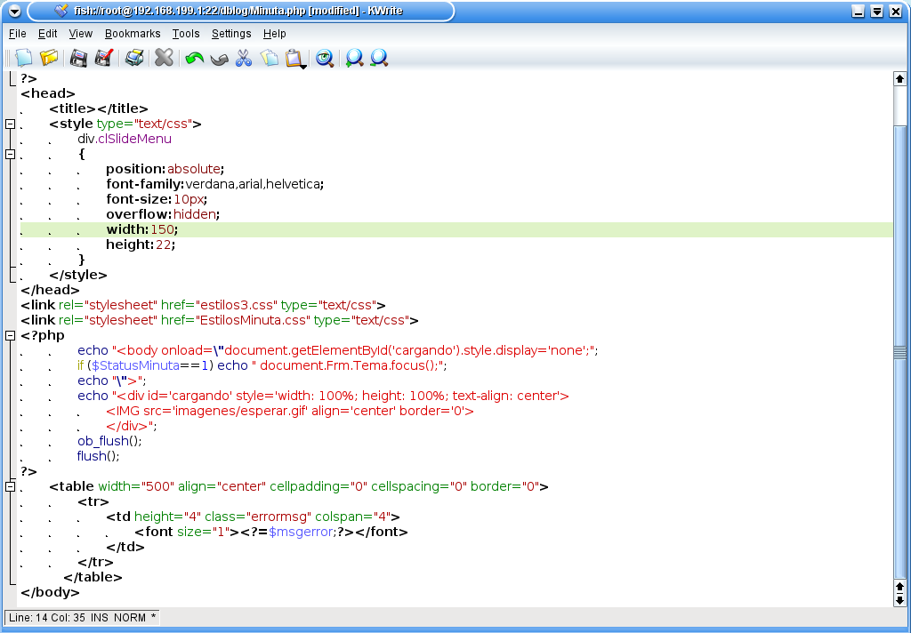
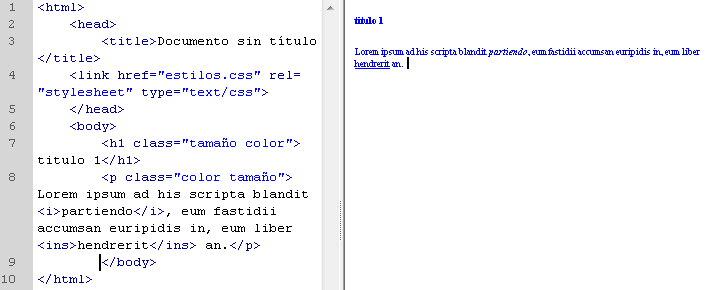

Proposito
El proposito de este sitios es dara a conocer que son las Sintaxis y como se manejan los selctores CSS, y hablar sobre la interaccion Humano Ordenador, respaldados con algunos ejemplos y el desarrollo de actividades para la comprension completa del tema.
Sintaxis
La sintaxis de un lenguaje, es el conjunto de reglas que definen las secuencias correctas de los elementos de un lenguaje de programación; La sintaxis, es la estructura de un documento HTML. Directivas para organizar y delimitar un documento HTML.
Photoshop, A. 2. Elementos básicos 3. La Sintaxis HTML. Obtenido de A Photoshop - cafyd.com

Selectores CSS
Los selectores definen sobre qué elementos se aplicará un conjunto de reglas CSS. Encontramos diferentes tipos de selectores
- Selector de Tipo
- Selector de Clase
- Selector de ID
- Selector Universal
- Selector de atributos
Selecciona todos los elementos que coinciden con el nombre del elemento especificado.
Selecciona todos los elementos que tienen el atributo de class especificado.
Selecciona un elemento basándose en el valor de su atributo id. Solo puede haber un elemento con un determinado ID dentro de un documento.
Selecciona todos los elementos. Opcionalmente, puede estar restringido a un espacio de nombre específico o a todos los espacios de nombres.
Selecciona elementos basándose en el valor de un determinado atributo. Sintaxis: [attr] [attr=value] [attr~=value] [attr|=value] [attr^=value] [attr$=value] [attr*=value]
Tinoco, E. E. C., & Solís, I. S. (2014). Programación web con CSS, JavaScript, PHP y Ajax. Iván Soria Solís. Obtenido de EEC Tinoco, IS Solís - 2014 - books.google.com
Interacción Humano-Ordenador
La Interacción Humano Ordenador, se convirtió oficialmente en una disciplina con el advenimiento de la computadora personal. Los PCs fueron lanzados con muchas nuevas características como procesadores de texto, facilidades de juego y ayudas de contabilidad. Con el tiempo, su nivel de sofisticación aumentó hasta el punto en que el objetivo era hacer que la interacción hombre-computadora se asemejara a la interacción entre humanos, de la forma más natural y sin fisuras posible.